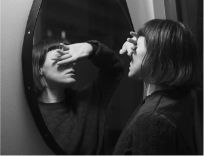

Метрогил ®

Метрогил / Блог / Популярные мифы про акне: диета, советы и врачи
Популярные мифы про акне: диета, советы и врачи
3 врага в доме, если у вас чувствительная кожа
11.12.2022
1 034
5 мин
Чувствительной коже важно получать достаточный уход.
В интернете есть много информации, как правильно ухаживать за кожей, какие препараты и косметику использовать.
Но мало о том, как важно содержать и поддерживать климат в своем доме при кожных заболеваниях.
А это одна из важных составляющих успешной борьбы с акне и розацеа. Ведь мы большую часть своего времени находимся в помещении. На что следует обратить внимание при планировании своего домашнего быта, если кожа воспалена и чувствительна?.
Враг № 1 – пыль
Пыль – это плохо как по меркаме как здорового человека, так и имеющего кожные заболевания.
Разница лишь в том, что для здоровой кожи пыль не представляет сильной опасности, хотя, безусловно, ничего хорошего в себе не несет.
Страдающим акне пыль вредна, как один из раздражителей, провоцирующий очередное обострение.
Пока вы ухаживаете за лицом, делаете все необходимые поддерживающие процедуры, пылевые клещи проникают в расширенные поры, что влечет очередную вспышку болезни и сводит к минимуму ваши старания в уходе. Поэтому людям с акне крайне важно минимизировать пыль в своем доме.
Первые источники пыли – подушки и одеяла, пледы, мягкие игрушки. Все это рекомендуется регулярно вытряхивать и проветривать. Делайте генеральную уборку хотя бы раз в неделю, а если живете вблизи автомагистралей и заводов – чаще. По возможности избегайте ковров в доме: – это прекрасное жилище для патогенной пылевой микрофлоры.
Главные вредители, находящиеся в пыли, – это клещи Demodex. Они являются возбудителями множества дерматологических заболеваний.
В борьбе с этим клещом хорошо помогают пароочистители.
Еще в 1995 году британские ученые проводили эксперимент, в котором ходе которого в течение нескольких месяцев наблюдали за размножением
пылевых клещей на обработанных и не обработанных паром поверхностях. На участках, которые регулярно обрабатывали паром, не было обнаружено ни одного вредителя.
В то время как на других участках, они размножались. Обрабатывайте поверхности пароочистителем – это отличный способ избавиться от раздражителей и аллергенов.
Враг № 2 – сухой воздух
Летом в помещениях работает кондиционер, зимой – отопительные приборыи. Все это высушивает кожу, она испытывает недостаток влаги, а обезвоженность вызывает избыточную сальность. Кроме этого, нарушается защитный барьер кожи, и ей труднее справляться с агрессивным воздействием среды. А мы добиваем её ее скрабами и подсушивающими тониками. Этого делать нельзя.
Увлажнитель воздуха решает проблему слишком сухого помещения.
Но это не значит, что использовать увлажнитель нужно всегда. Постоянно включенный прибор повышает уровень влажности, – а это условие для размножения инфекционных микроорганизмов.
Сочетайте использование увлажнителя с аэрозолями, восполняющими недостаток влаги. Вот несколько рекомендаций для качественной работы увлажнителя воздуха:
- Используйте бутилированную или дистиллированную воду. В ней меньше микробов и минералов.
- Регулярно очищайте корпус прибора, меняйте или чистите фильтр от частиц грязи и налета.
- Не используйте увлажнитель при любых условиях и не забывайте проветривать помещение даже зимой.
Враг № 3 – синтетика
Все, что прикасается к коже, влияет на ее состояние. Синтетика – плотная и жесткая. При длительном контакте она угрожает развитием дерматита или сильного раздражения кожи в результате трения. Болезнь может развиться в результате воздействия на кожу летучих соединений и химических красителей, которыми обрабатывается ткань.
Если вы стремитесь к комфортной жизни без проблем с кожей, – убирайте синтетику подальше. Самый надежный способ – отдать на переработку. Все, начиная с повседневного гардероба и, заканчивая постельным бельем, должно быть из натуральных тканей. Сейчас существуют специальные гипоаллергенные и антибактериальные ткани, которые бережно заботятся о коже.
Небольшой обзор по выбору ткани:
- Шелк – гипоаллергенный материал, в котором не приживаются пылевые клещи и плесень. Идеальный вариант для здоровья кожи.
- Хлопчатобумажные ткани, в отличие от шёлка шелка, имеют свойство накапливать пыль и частички кожи, однако обладают хорошей теплопроводностью и практически не вызываюет аллергических реакций.
- В продаже есть специальное антибактериальное постельное бельёбелье. Это хлопок с добавлением серебра. Ткань обладает бактерицидными свойствами и имеет специальную дышащую структуру, что позволяет не задерживать влагу и дольше оставаться чистым.
Вас может заинтересовать
здоровье
К какому врачу обратиться с подозрением на розацеа?

психология
«Не хочу смотреть на себя в зеркало» или как справиться с акне
здоровье
Может ли диета помочь при розацеа
КИНО
3 героини с «дефектами» внешности